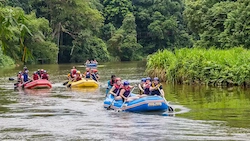
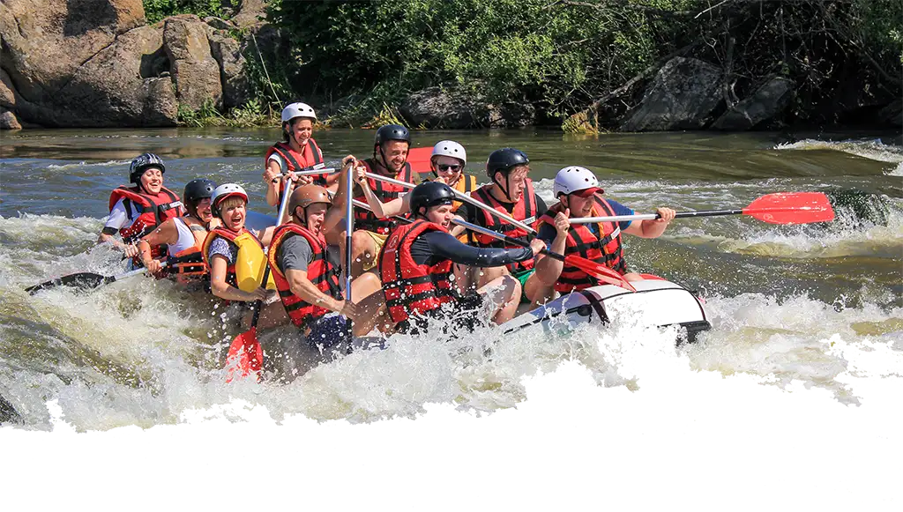
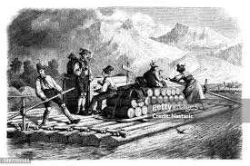
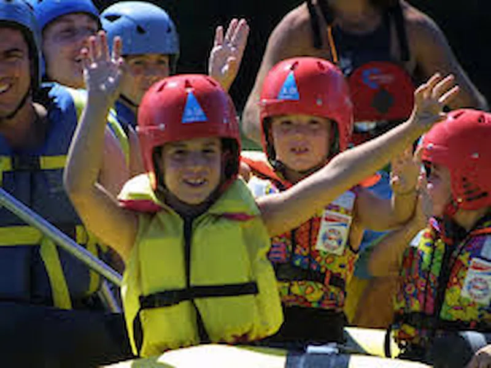
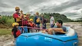
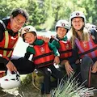
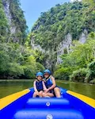
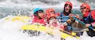

It is a group dedicated to getting people to have wonderful experiences in contact with nature. Not many know it is near Huanuco City and that many people have had unforgettable memories here discovering that life is so precious.


It is a group dedicated to getting people to have wonderful experiences in contact with nature. Not many know it is near Huanuco City and that many people have had unforgettable memories here discovering that life is so precious.
Our family's Huanuco Rafting emerged like a great custom, and now it is a reality that all people can know and that you can see, enjoy, and be a part of, and we all are working to make this adventure safe where you can only see fantastic times in contact with the river. Our company has a time of exercising of approximately 10 years and was founded by Anhelo Yauri and his brothers.

Rafting in Huánuco is not just an adventure but also a way to connect with others. We might normally say that you come on this adventure just to have fun, but no, there's more to discover, and this is that: here a lot of families and younger people meet and create a social life, making this sport in common, which was a blessing for their lives and an inspiration for us, as we know the social life is part of our health. For this reason, we can say that here for 10 years many people have gotten great relationships like friends and even created couples.




